Artigo original da equipa B2B WAFU para operadores hoteleiros, proprietários e decisores PropTech. Para questões de compatibilidade em projetos de hotelaria, consulte também o nosso guia prático de compatibilidade de fechaduras invisíveis.
Resumo
Os sistemas tradicionais de fechaduras hoteleiras atingiram os seus limites em termos de segurança, eficiência e experiência do hóspede; as suas falhas sistémicas inerentes estão a tornar-se um estrangulamento para a transformação digital das operações hoteleiras. Através do seu protocolo de rede proprietário SecureMesh, arquitetura de segurança com certificação FIPS 140-2 e algoritmos patenteados de poupança de energia, o sistema de chave digital WAFU SMART-LOCK+ oferece aos operadores hoteleiros uma solução completa de controlo de acessos inteligente. Com base numa estrutura de custos em Euros (€), este documento apresenta um guia que aborda os aspetos técnicos, os retornos do negócio e um caso de estudo alemão, demonstrando o valor do sistema como uma atualização estratégica da infraestrutura.
Palavras-chave: WAFU SMART-LOCK+, rede SecureMesh, gestão dinâmica de acessos, simulação de ROI em Euros, check-in sem cartão, integração com PMS, fechadura digital para hotel, sistema de chave digital, automação hoteleira, gestão de check-in sem contato
01 SecureMesh
Protocolo proprietário com comunicação estável e consumo energético reduzido.
02 FIPS 140-2
Chip de segurança integrado e encriptação ponta a ponta em todas as operações.
03 24+ meses
Algoritmo energético patenteado para longa autonomia sem substituições frequentes.
04 Integração PMS
Integração API profunda com direitos de acesso ligados ao estado da reserva.
05 ROI ~22 meses
Para um hotel de 100 quartos, o payback pode situar-se em cerca de 22 meses.
Introdução: Limitações Sistémicas das Fechaduras Hoteleiras Tradicionais
A indústria hoteleira enfrenta atualmente quatro grandes desafios estruturais relacionados com a gestão de acessos:
- Protocolos de Segurança Obsoletos: Os cilindros de fechaduras mecânicas são vulneráveis às técnicas de abertura forçada (gazua/picking), e os cartões magnéticos são facilmente clonados; estes sistemas não cumprem as normas modernas de segurança digital, representando riscos tanto para a segurança da propriedade como para a segurança pessoal.
- Ineficiências Operacionais: Os processos físicos de distribuição, recolha e substituição de cartões-chave perdidos consomem tempo e mão-de-obra significativa da receção, resultando em elevados custos operacionais e frequentes reclamações dos hóspedes.
- Experiência do Hóspede Fragmentada: Sistemas de acesso físico isolados não conseguem estabelecer uma integração de dados de ciclo fechado com o PMS (Sistema de Gestão de Propriedade), CRM e canais de reserva online do hotel, criando uma desconexão entre a experiência física e a digital do hóspede.
- Gestão de Acessos Rígida e Opaca: Os sistemas carecem da capacidade de gerir o acesso de forma dinâmica e em tempo real com base no horário, localização e identidade, além de não oferecerem capacidades granulares de auditoria e rastreabilidade das atividades dos colaboradores e visitantes.
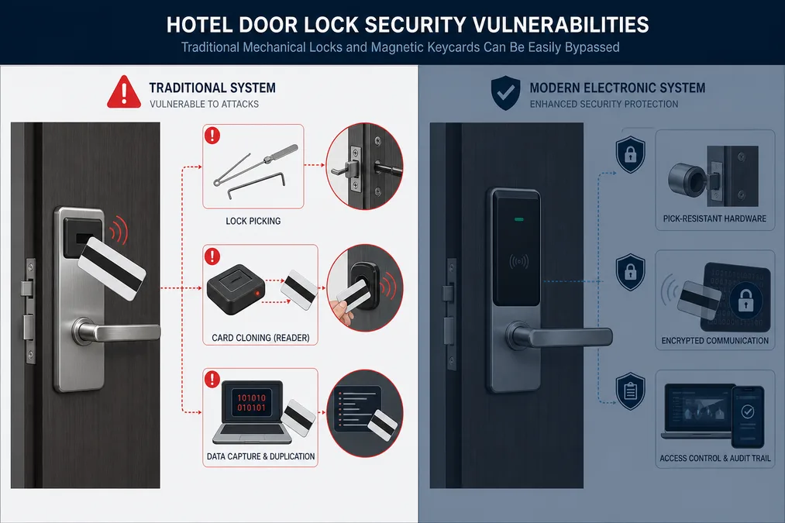
As otimizações incrementais para resolver estes problemas estão a gerar retornos decrescentes; uma transformação sistémica exige inovação fundamental ao nível da tecnologia subjacente.
Arquitetura Técnica: Os Princípios por Trás do WAFU SMART-LOCK+
O WAFU SMART-LOCK+ não é apenas um hardware de fechadura inteligente; trata-se de um sistema de controlo de acessos inteligente baseado em software. A sua estrutura técnica central é composta pelos seguintes módulos:
- Protocolo de Rede Proprietário WAFU SecureMesh™: Utiliza tecnologia de rede Mesh de baixo consumo e alta segurança, desenvolvida internamente, operando na banda de 2.4GHz. Os nós (fechaduras) formam uma rede auto-organizada com comunicação redundante de múltiplos caminhos, garantindo a cobertura total do sinal e a estabilidade em estruturas arquitetónicas hoteleiras complexas, ao mesmo tempo que eliminam os riscos de ponto único de falha associados aos sistemas tradicionais BLE ou Wi-Fi.
- Módulo Central de Encriptação de Segurança (Certificação FIPS 140-2): Conta com um chip de segurança de hardware integrado; os seus algoritmos de encriptação e mecanismos de gestão de chaves obtiveram a certificação de segurança FIPS 140-2 Nível 2. Para combater ataques físicos e interceção de sinais (man-in-the-middle), este módulo garante que as chaves criptográficas nunca deixam o hardware seguro, tornando a clonação virtualmente impossível.
- Unidades de Autenticação e Execução:
- Autenticação Multimodal: Suporta a aplicação oficial do hotel (via Bluetooth/NFC), passwords dinâmicas (de utilização única ou com validade temporária) e cartões/pulseiras inteligentes encriptados, com escalabilidade para integração de reconhecimento de impressões digitais.
- Acionamento por Motor sem Servo (Servo-less): Emprega um design de motor patenteado de baixo consumo e elevado binário para garantir um desbloqueio rápido e fiável, fornecendo a base de hardware para algoritmos essenciais de poupança de energia.
- Algoritmo Patenteado de Economia de Energia WAFU: Graças ao uso de baterias de lítio CR2 de alta densidade e algoritmos de gestão dinâmica de energia, o sistema garante mais de 24 meses de autonomia em condições normais de utilização hoteleira (cerca de 10 aberturas diárias), sem comprometer a resposta em tempo real, e inclui alertas multinível de bateria fraca.
- Camada de Gestão na Nuvem e Integração com PMS: Integra-se profundamente nas principais plataformas hoteleiras de PMS (como Oracle Opera, Protel, RMS, etc.) através de APIs padronizadas (RESTful) com autenticação OAuth 2.0 e Webhooks, permitindo uma gestão automatizada dos direitos de acesso com baixo custo de desenvolvimento e maior estabilidade do sistema — especificamente, «autorização no momento da reserva» e «desativação no momento do checkout». A sua lógica operacional segue um processo de ciclo fechado de ponta a ponta: «Verificação de Credenciais → Autenticação de Segurança Local/na Nuvem → Operação do Atuador → Retorno de Dados de Estado em Tempo Real para a Plataforma na Nuvem.»
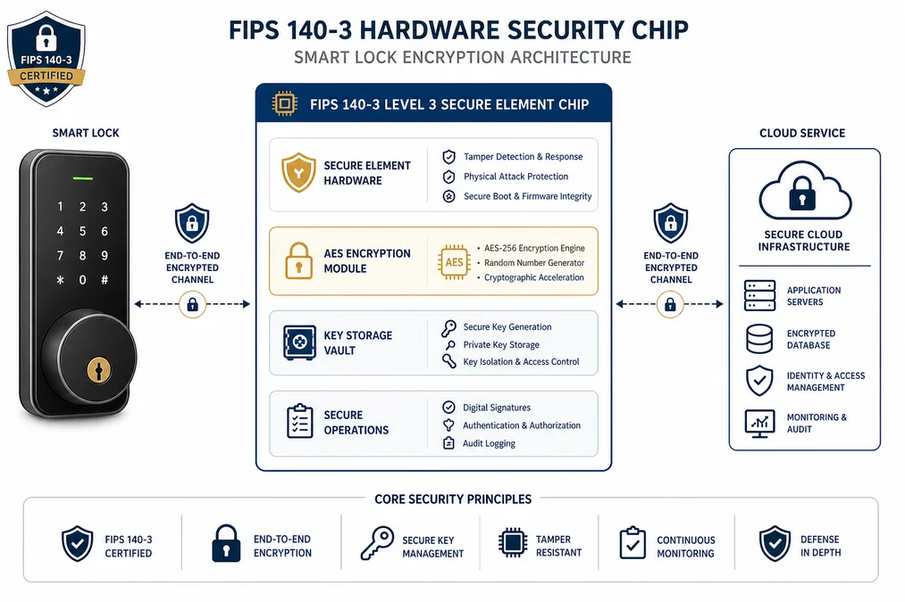
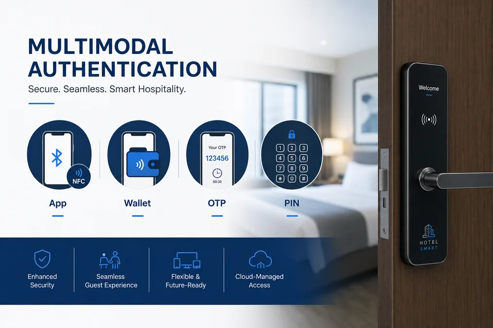
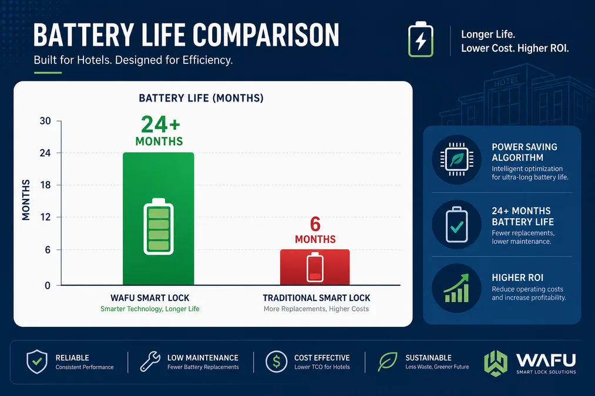
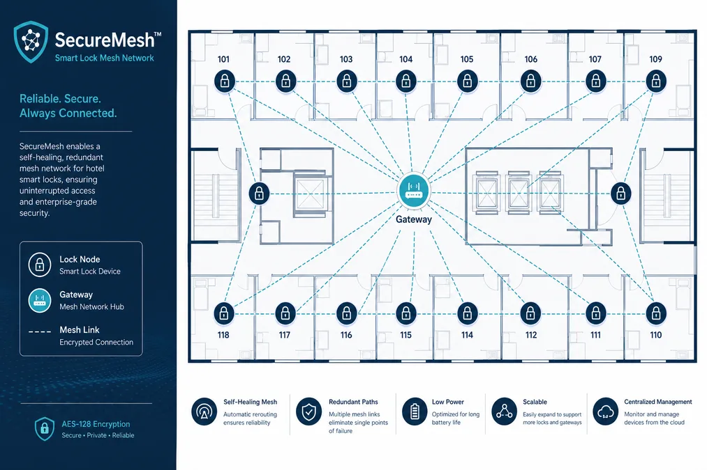
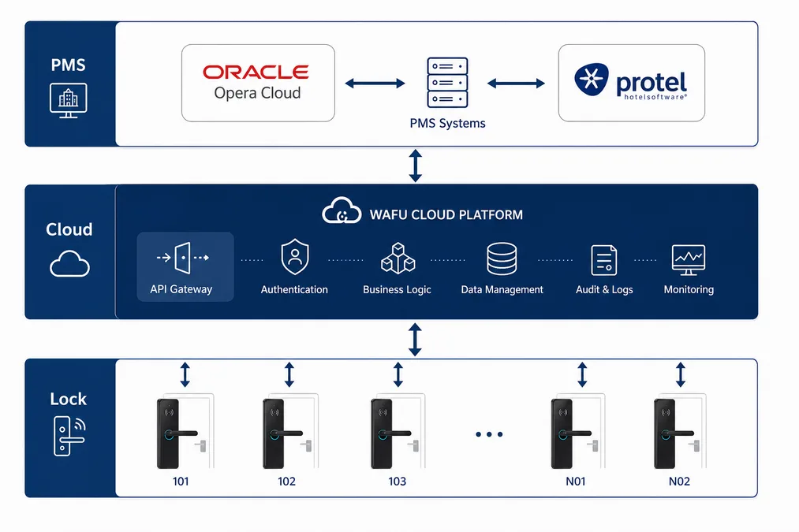
Conformidade e Privacidade de Dados
O sistema adota uma arquitetura Privacy by Design, estando em conformidade com o RGPD (GDPR) europeu e a LGPD brasileira. Os dados de acesso são anonimizados e encriptados ponta a ponta, garantindo que o processamento de dados pessoais se limita ao estritamente necessário para a gestão de acessos e que os hóspedes mantêm o controlo das suas permissões.
Valor Principal: Melhoria Estratégica das Operações Hoteleiras
1. Redefinir a Base da Segurança
- Minimização da Superfície de Ataque Físico: Comparado com uma fechadura digital para hotel tradicional, o WAFU elimina os cilindros de fechadura mecânica expostos, removendo fundamentalmente os pontos de entrada para técnicas de abertura forçada ou manipulação da fechadura (lock-picking).
- Políticas de Acesso Dinâmicas e Programáveis: Os direitos de acesso aos quartos sincronizam-se em tempo real com o estado das reservas no PMS; o acesso da equipa pode ser configurado com precisão com base na identidade individual, janelas horárias específicas (ex.: 08:00–18:00) e áreas funcionais designadas (rouparia, armazéns).
- Rastreabilidade de Auditoria de Ciclo de Vida Completo: Todos os eventos da fechadura (data/hora, ID, método de verificação, resultado) são encriptados e armazenados na nuvem, permitindo consultas em tempo real e exportação de dados para satisfazer os requisitos de auditoria interna e investigações de conformidade.
2. Otimização Exponencial da Eficiência Operacional
- Reengenharia de Processos da Recepção e «Check-in com Espera Zero»: Possibilita uma experiência de check-in totalmente sem contacto (contactless) via Chave Móvel (Mobile Key), um exemplo concreto de um sistema de chave digital em ação. Após a reserva online, os hóspedes podem abrir os seus quartos utilizando o smartphone no horário agendado, reduzindo o tempo de check-in na receção para quase zero; isto alivia significativamente a pressão operacional em períodos de pico e melhora as taxas de rotação dos quartos.
- Integração Automatizada de Cenários: O ato de abrir a porta serve de gatilho para ativar a RCU (Unidade de Controlo do Quarto) e iniciar «modos de boas-vindas» predefinidos (iluminação, climatização, cortinas). O sistema também se integra com sistemas de gestão de energia: após a entrada, sensores inteligentes monitorizam o movimento no quarto; num período de inatividade pré-definido, o sistema desencadeia automaticamente um modo de poupança profunda (diminuição do ar condicionado, desligar iluminação não essencial).
- Redução Estrutural dos Custos de Operação e Manutenção (O&M): Elimina por completo os custos associados à compra, emissão e gestão de cartões-chave físicos. A plataforma na nuvem suporta monitorização remota de estado, atualizações de firmware e diagnóstico de avarias, reduzindo drasticamente a mão-de-obra necessária para inspeções e manutenções presenciais.
3. Integração Perfeita da Experiência do Hóspede e Agregação de Valor
- Máxima Conveniência e Sensação de Controlo: O conceito de «Telemóvel como Chave» resolve problemas comuns como esquecer ou perder cartões-chave, oferecendo aos hóspedes uma experiência de acesso mais autónoma e fluida.
- Pontos de Contacto de Atendimento Personalizado: Utiliza os dados de preferência dos hóspedes para criar cenários personalizados — como um ambiente acolhedor logo à entrada —, fortalecendo assim a recordação da marca e a sua diferenciação.
- Gestão Flexível de Serviços para Visitantes: Gera permissões de acesso temporárias — restritas por tempo ou número de utilizações — para prestadores de serviços externos (ex.: entrega de alimentos, equipas de manutenção), aumentando a agilidade no atendimento e a segurança.
Análise do ROI: Cálculo Detalhado do Investimento e da Criação de Valor (EUR)
Nota: Os cálculos e percentagens apresentados abaixo são simulações teóricas baseadas em médias da indústria. O ROI real depende das taxas de ocupação, custos locais de mão-de-obra e tarifas energéticas de cada propriedade.
Estrutura de Custos (CAPEX e OPEX)
- Custo de Aquisição de Hardware (CAPEX): O preço de compra (impostos incluídos) de uma unidade WAFU SMART-LOCK+ varia entre 220€ e 550€, dependendo do material do corpo da fechadura (liga de zinco vs. aço inoxidável), da configuração das características (ex.: sensores de estado da porta integrados) e do volume de compra.
- Custo Único de Implementação: Inclui a remoção das fechaduras antigas, a instalação e a ativação das novas fechaduras, bem como a integração via API com sistemas PMS existentes. Geralmente representa 20% a 35% do custo total do hardware.
- Taxa Anual de Serviço de Software (OPEX): Cobre o acesso à plataforma de gestão na cloud, atualizações de segurança, suporte técnico e manutenção básica. Cobrada anualmente por quarto, variando entre aproximadamente 15€ a 30€.
Modelo de Criação de Valor (Exemplo: Hotel de categoria média com 100 quartos)
1. Poupança Direta de Custos (Quantificável):
- Eliminação de Custos com Cartões de Acesso: Com base numa taxa média anual de perda de 15% e num custo de 0,50€ por cartão, a poupança anual é de 0,50€ × 100 quartos × 15% ≈ 7,50€ (um valor baixo, mas que representa um custo marginal zero).
- Otimização dos Custos de Mão-de-Obra na Receção: Numa estimativa conservadora, o check-in sem cartão poupa 2 horas diárias de trabalho na receção — tempo que, de outra forma, seria gasto a emitir cartões e a lidar com pedidos relacionados com os mesmos. Considerando um custo de mão-de-obra de 25€/hora, a poupança anual é de 25€ × 2 horas × 365 dias ≈ 18.250€.
- Redução dos Custos de Energia: A redução de 12–18% no consumo energético é alcançada através de um ciclo fechado: o ato de desbloqueio da porta atua como gatilho para a RCU (Unidade de Controlo do Quarto), ativando o modo de boas-vindas. Quando os sensores inteligentes de presença não detetam movimento durante um período prolongado, o sistema comunica com a fechadura para confirmar o estado «desocupado» e alterna automaticamente a climatização e iluminação para o modo de poupança profunda. Com base num custo médio anual de eletricidade de 350€ por quarto, a poupança anual de energia ascende a aproximadamente 350€ × 100 quartos × 15% ≈ 5.250€.
2. Melhorias na Eficiência Operacional (Monetização Semiquantitativa/Equivalente):
- Valor das Diárias Recuperadas através do Check-in Mais Rápido: A maior eficiência no check-in durante as horas de maior afluência pode aumentar a disponibilidade de quartos no próprio dia, criando oportunidades de receitas incrementais, especialmente quando o hotel está com a ocupação máxima.
- Maior Eficiência na Gestão: Recursos como a gestão remota de acessos em batch e os alertas em tempo real reduzem em aproximadamente 30% o tempo que os supervisores de governação (housekeeping) dedicam às inspeções diárias.
3. Valorização da Experiência e Crescimento da Receita (Potencialmente Quantificável):
- Redução de Avaliações Negativas e Custos com Reclamações: Menor número de reclamações de hóspedes e custos de compensação associados a problemas com cartões de acesso.
- Aumento da Proporção de Reservas Diretas: A oferta do «check-in móvel com um toque» como benefício exclusivo para reservas diretas (via site do hotel e canais de fidelização) estimula efetivamente as reservas diretas, reduzindo assim as despesas com comissões das OTAs (tipicamente de 15% a 25% da tarifa do quarto).
- Apoio às Tarifas Premium: Uma experiência de check-in inteligente e segura atua como um importante diferencial para hotéis de categoria média a superior, justificando um acréscimo tarifário de 5 a 15€ por noite.
| Tipologia de benefício | Métrica de quantificação | Valor anual (EUR) |
|---|---|---|
| Otimização de mão-de-obra na receção | 2 horas poupadas por dia a 25€/hora | 18.250 |
| Redução de custos energéticos | 15% de redução no consumo em quartos vazios | 5.250 |
| Eliminação de custos com cartões | 15% de perda média, 0,50€/cartão | 7,50 |
| Total de poupanças anuais quantificáveis | Apenas poupanças diretas | 23.500 |
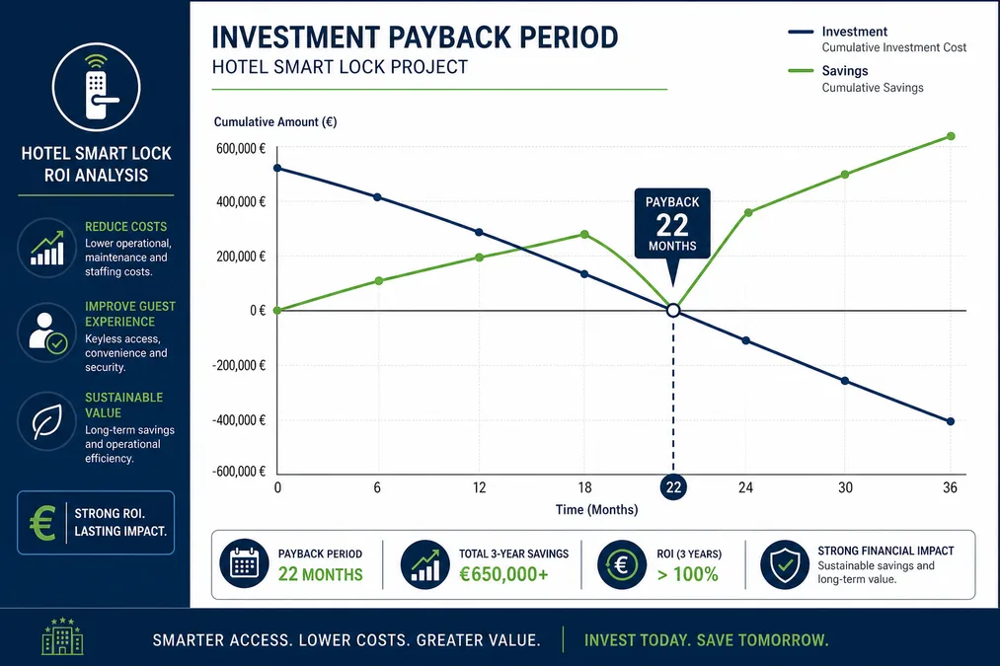
Exemplo de Cálculo do Período de Payback Estático
Premissas:
- 100 quartos de hóspedes; configuração de fechadura de categoria média selecionada; custo por fechadura: 350€.
- Custo total de ferragens: 350€ × 100 = 35.000€
- Custos de implementação e integração (calculados em 25% do custo de hardware): 8.750€
- Investimento Total (CAPEX): 43.750€
Benefícios Quantificáveis Anuais (Apenas poupanças diretas):
- Poupança com custos de mão-de-obra: 18.250€
- Poupança com custos de energia: 5.250€
- Poupança Anual Total (redução de OPEX): 23.500€
Período de Retorno (Payback) Estático:
43.750€ / 23.500€ ≈ 1,86 anos (aprox. 22 meses)
Estudo de Caso: Desempenho do ROI nos Mercados de Língua Alemã
Embora os seguintes casos de estudo estejam sediados no mercado alemão — conhecido pelos seus rigorosos padrões de privacidade e eficiência energética —, as métricas de ROI e a arquitetura técnica são totalmente replicáveis nos mercados lusófonos (Portugal, Brasil, etc.).
- Hotel de Negócios no Centro de Colónia (120 quartos):
- Desafio: Elevado fluxo de hóspedes, filas significativas na receção e elevado risco de duplicação dos cartões-chave magnéticos tradicionais.
- Solução: Implementação do WAFU SMART-LOCK+ com integração profunda no sistema Protel PMS.
- Resultados: Tempo de espera no check-in nas horas de ponta reduzido em 70%; poupança anual de 21.000€ em custos de mão-de-obra; taxas de reservas diretas aumentaram 8% devido à implementação do check-in através de um dispositivo móvel. Período de retorno estático: 21 meses.
- Hotel no Aeroporto de Frankfurt (200 quartos):
- Desafio: Rotatividade de hóspedes extremamente elevada, elevadas taxas de perda de cartões-chave e gestão de energia ineficiente.
- Solução: Implementação em todo o hotel combinada com estratégias inteligentes de poupança de energia integradas no sistema.
- Resultados: Eliminação dos custos operacionais relacionados com os cartões-chave; redução de 16% no consumo total anual de energia, resultando numa poupança de 11.200€. Período de retorno estático: 19 meses.
- Hotel Boutique Histórico em Munique (80 quartos):
- Desafios: Estrutura arquitectónica complexa (paredes espessas), dificuldade na cobertura de sinal sem fios e necessidade de preservar o carácter histórico do edifício.
- Solução: Utilização dos recursos de rede auto-organizada SecureMesh™; emprego de métodos de instalação discretos e espelhos de acabamento personalizados em estilo vintage.
- Resultados: Cobertura de sinal contínua e eficiente em todo o edifício; melhoria significativa da satisfação dos hóspedes em relação à experiência de «fusão entre tecnologia e história»; viabilização de uma tarifa premium cerca de 12% superior. Período de retorno estático: 24 meses.
Desafios e Soluções Práticas
A transição para um sistema de gestão de acessos digital, embora vantajosa, apresenta desafios práticos que podem ser mitigados com planeamento.
01 Edifícios Históricos
Cenário: Portas e caixilhos não padronizados ou alterações estruturais proibidas.
Solução: Kits de adaptação WAFU e painéis específicos permitem instalar o mecanismo inteligente sem substituir a porta original, como demonstrado no caso de Munique.
02 Continuidade Offline
Cenário: Interrupções de rede ou energia geram preocupações quanto à abertura das portas.
Solução: Memória cache local das permissões válidas; autenticação via Bluetooth ou NFC sem internet; chave física de emergência em cada fechadura.
03 Adoção pela Equipa
Cenário: Funcionários céticos ou com dificuldade em interfaces complexas.
Solução: Programa de formação estruturado, UI intuitiva e abordagem de projeto-piloto para familiarização gradual.
04 Check-out Tardio
Cenário: Necessidade de estender acesso para hóspedes com check-out tardio ou prestadores de serviços.
Solução: Sincronização automática com o PMS; prolongamento dinâmico de permissões; acessos temporários gerados em segundos pela receção.
Roteiro de Implementação: Planeamento Estratégico e Expansão Ágil
Recomendamos uma estratégia de implementação ágil, realizada por fases e com baixo risco:
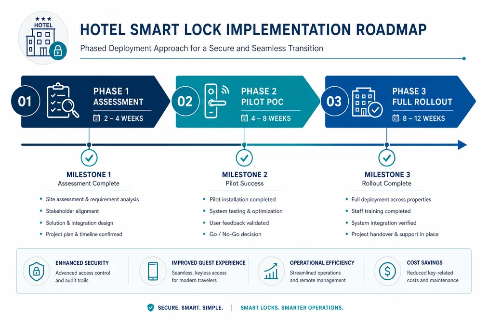
- Avaliação Estratégica e Planeamento (2 a 4 semanas): Definir os objetivos de digitalização do hotel e avaliar a infraestrutura de TI existente (PMS/rede); realizar avaliações de compatibilidade técnica e cálculos preliminares de ROI.
- Projeto Piloto de Prova de Conceito (4 a 8 semanas): Selecionar um piso típico ou uma categoria específica de quartos (ex.: piso executivo) para uma implementação em pequena escala, visando verificar a estabilidade do sistema, os fluxos de trabalho da equipa e a aceitação por parte dos hóspedes.
- Integração Técnica e Implementação (8 a 12 semanas, dependendo da escala): Concluir a integração profunda via API com o PMS do hotel; realizar a instalação em massa de hardware, a configuração da rede e o comissionamento do sistema. A WAFU disponibiliza o WAFU Connect SDK para permitir a rápida integração das funções de abertura de portas na aplicação proprietária do hotel.
- Reengenharia de Processos e Formação da Equipa: Reformular os Procedimentos Operacionais Padrão (POPs) para as equipas de receção, governação e TI com base no novo sistema; realizar formação direcionada para garantir uma transição tranquila.
- Orientação aos Hóspedes e Comunicação de Valor: Orientar claramente os hóspedes sobre a utilização de novas funcionalidades, como a Chave Móvel (Mobile Key), através de múltiplos canais, incluindo e-mails de confirmação de reserva, sinalética digital no hotel e apresentações proativas na receção.
- Otimização Contínua e Operações Baseadas em Dados: Utilizar os dados da plataforma cloud para analisar continuamente os padrões de abertura de portas e o consumo de energia; otimizar políticas de acesso e cenários automatizados; e explorar soluções White-Label para equipar marcas de grupos hoteleiros com capacidades de controlo de acesso inteligente.
Perguntas Frequentes (FAQ)
O que acontece se o Wi-Fi do hotel cair?
O sistema foi concebido para funcionar em modo offline. As fechaduras armazenam em cache localmente as permissões de acesso válidas. A autenticação via Bluetooth ou NFC da aplicação móvel continua a funcionar normalmente mesmo sem conectividade com a internet. A chave física de emergência também está sempre disponível.
A fechadura digital exige substituição total da porta?
Na grande maioria dos casos, não. O WAFU SMART-LOCK+ oferece soluções modulares que se adaptam à maioria das portas padrão do setor hoteleiro. Para portas históricas ou não padronizadas, dispomos de kits de adaptação específicos que evitam a necessidade de substituição completa da porta.
Como é que o sistema lida com o check-out tardio?
O sistema integra-se em tempo real com o PMS do hotel. Se o horário de check-out for prolongado na ficha do hóspede no PMS, as permissões de acesso ao quarto são automaticamente atualizadas e estendidas para o novo horário, sem necessidade de intervenção manual na receção.
Hóspedes sem smartphone conseguem abrir a porta?
Sim. Para além da chave móvel (Mobile Key), o sistema suporta cartões inteligentes encriptados (RFID) e a geração de passwords temporárias (PIN) que podem ser enviadas por SMS ou e-mail, garantindo que todos os hóspedes têm acesso.
O que significa a certificação FIPS 140-2 na prática?
Significa que o módulo de segurança do hardware cumpre um rigoroso padrão aprovado pelo governo dos EUA, oferecendo três benefícios práticos: 1) Proteção Física — resistência a tentativas de extração ou manipulação física do chip para roubar chaves; 2) Comunicação Segura — encriptação de ponta a ponta que impede a clonagem ou interceção de sinais; 3) Isolamento de Chaves — as chaves criptográficas críticas nunca saem do chip seguro, tornando um comprometimento em larga escala do sistema virtualmente impossível.
Como Avaliar a Sua Prontidão para a Atualização
Para transformar a gestão de acessos numa vantagem competitiva mensurável, recomendamos uma abordagem estruturada:
- Auditar a infraestrutura PMS atual: Verificar a compatibilidade técnica e a robustez da rede.
- Calcular o CAPEX vs. OPEX estimado: Utilizar os seus dados de custos de mão-de-obra, energia e manutenção para criar um modelo de ROI realista.
- Definir um piloto num piso isolado: Implementar o sistema num conjunto limitado de quartos para validar a tecnologia, a formação e a aceitação dos hóspedes com risco mínimo.
- Avaliar métricas de satisfação pós-implementação: Monitorizar o tempo de check-in, o consumo de energia e a satisfação dos hóspedes para quantificar o valor gerado.
Certificações & Patentes
Certificação CE · Conformidade FCC (Part 15) · Conformidade RoHS · Proteção Brevetária (DE/EP/CN, etc.)
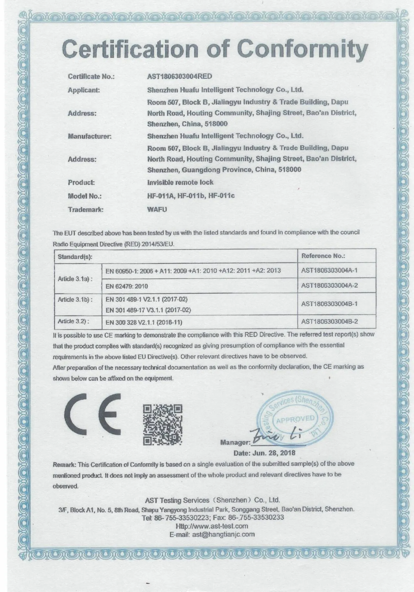
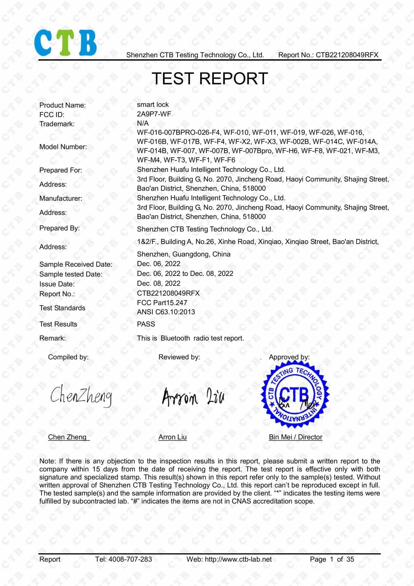
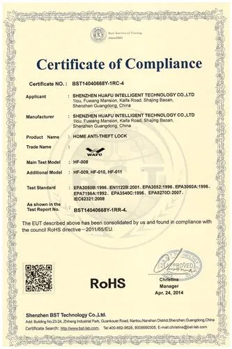
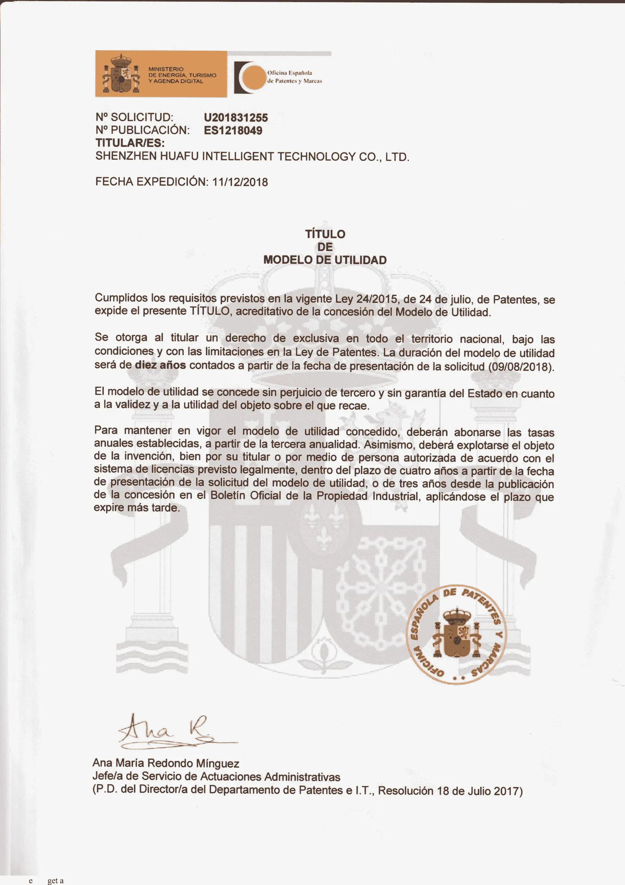
Conclusão
O WAFU SMART-LOCK+ representa uma mudança de paradigma operacional que vai para além das simples atualizações de hardware. Ao combinar uma arquitetura de segurança em conformidade com a norma FIPS 140-2, algoritmos patenteados de poupança de energia, conformidade rigorosa com padrões de privacidade e um modelo claro de retorno do investimento (ROI) em euros (€), a solução oferece aos operadores hoteleiros um caminho mensurável e viável para a transformação tecnológica. A abordagem faseada e a consideração proativa dos desafios de implementação minimizam o risco.
Num setor em que a concorrência depende cada vez mais da eficiência operacional e da diferenciação da experiência do hóspede, investir nesta infraestrutura inteligente de base não é apenas uma decisão financeira para reduzir os custos operacionais; é uma medida estratégica para criar uma vantagem competitiva duradoura para a marca e aumentar a resiliência contra o risco. O primeiro passo começa com uma conversa com a nossa equipa. Recomendamos também o guia hotel e residencial e o white paper OEM/ODM B2B para uma avaliação de projeto completa.
Nota: custos e resultados citados são estimativas ilustrativas baseadas em dados do setor e podem variar consoante o projeto. © 2026 WAFU Smart Lock. Todos os direitos reservados.